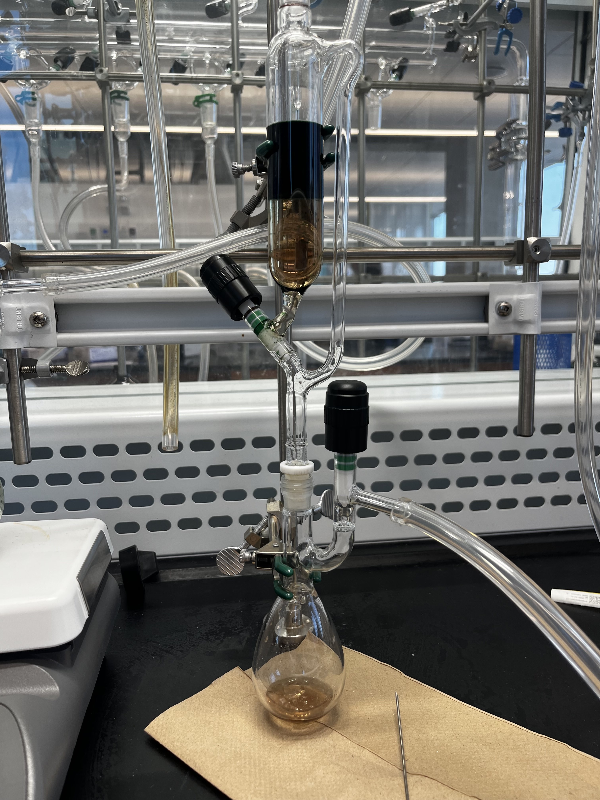
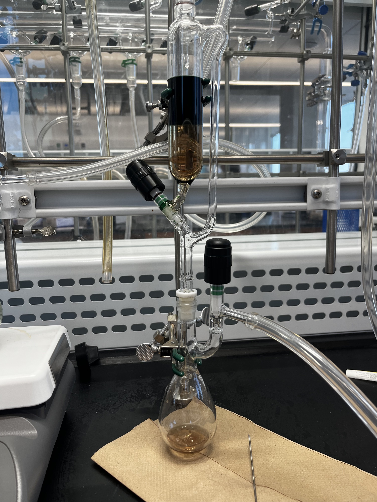
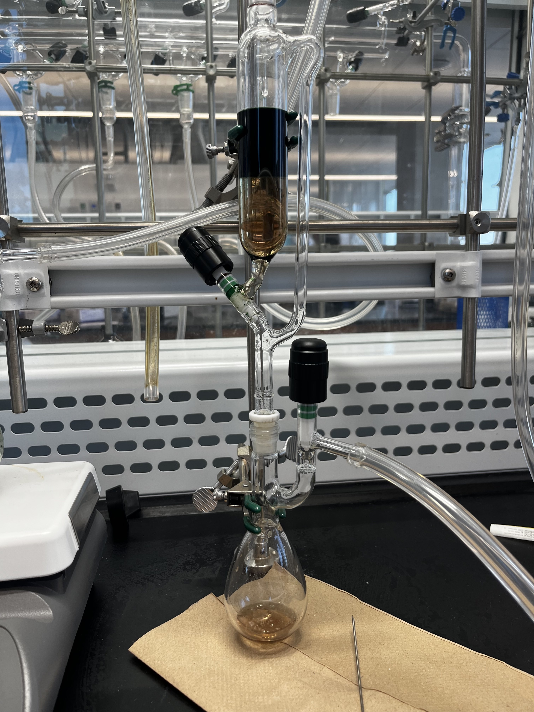

NMR: sufficient with Bruker software and running NMR experiments.
Advanced Synthesis Techniques: glove box, Schlenk line
Purification Techniques: recrystallation, extractions, flash chromatography,
X-Ray Radiation Safety Certified.
N-heterocyclic carbenes are very important catalysts in many chemical reactions researched today. Depending on the substituents of the N-heterocyclic carbenes, different properties can be obtained. In my research, three different arylamines were used to synthesize three different N-heterocyclic carbenes. The three arylamines used are as follows: mesitylamine, 2-fluoroaniline, and 4-nitroaniline. Below is the symposium poster I presented to my professors and other audiences.
The synthesis of nickelocene is extremely air-sensitive. First nickel hexaammine chloride must be synthesized first as a precursor. Then it is reacted with sodium cyclopentadienide in an air-free environment. In this procedure, everything is executed in a Schlenk line. After working on the Schlenk line, the enclosed flask was moved to a glove box where the crystals were collected into a vial and were further purified via sublimation.

2-propyl bis(dimethylglyoximato)pyridine cobalt(III) (iPrCo(DH)2py) is a cobalt complex that mimic the functions of vitamin B12.